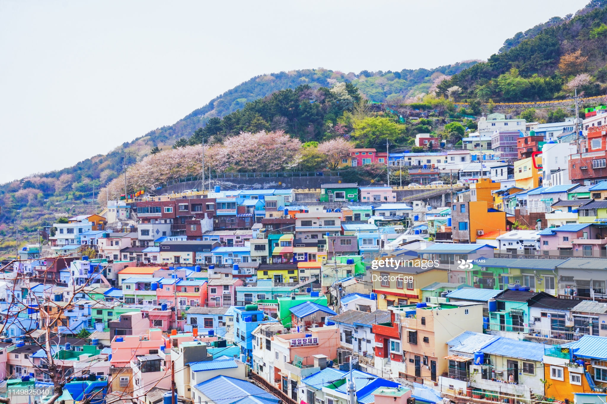
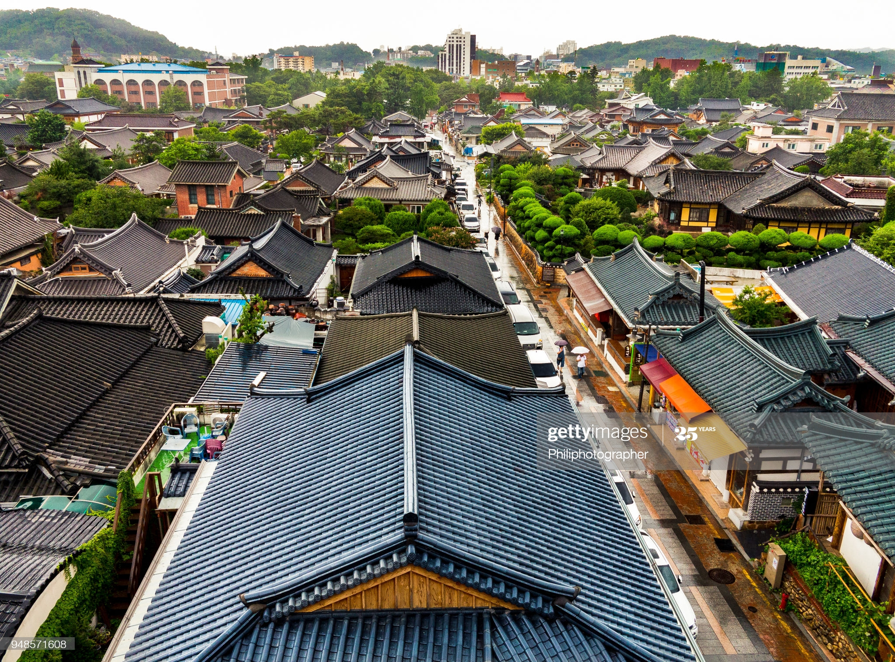
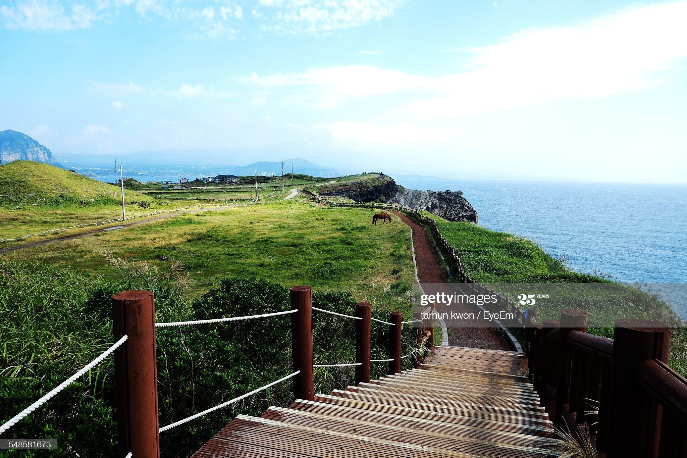

Korea is still something of an unknown territory, and more than half of all its visitors get no further than Seoul. One of the largest and most technically advanced cities in the world, the capital regularly confounds expectations by proving itself steeped in history. Here, fourteenth-century palaces, imperial gardens, teeming markets and secluded tearooms continue to exude charm among a maze of skyscrapers and shopping malls. From Seoul, anywhere in the country is reachable within a day, but the best day-trip by far is to the DMZ, the strip of land that separates the two Koreas from coast to coast.
Gyeonggi, the province that surrounds Seoul, is a largely unappealing area dissected by the roads and railways that snake their way into the capital, but two of its cities certainly deserve a visit: Suwon, home to a wonderful UNESCO-listed fortress dating from the late eighteenth century; and cosmopolitan Incheon, where you can eat some of the best food in the country before making your way to the islands of the West Sea. By contrast, the neighbouring province of Gangwon is unspoilt and stuffed full of attractions – in addition to a number of national parks, of which craggy Seoraksan is the most visited, you can head to the unspoilt beaches and colossal caves that surround the small city of Samcheok, or peek inside a genuine American warship and North Korean submarine north of the sleepy fishing village of Jeongdongjin.
Stretching down from Gangwon to the South Sea lie the markedly traditional Gyeongsang provinces, home to some of the peninsula’s most popular attractions. Foremost among these is gorgeous Gyeongju; capital of the Silla dynasty for almost a thousand years, and extremely laid-back by Korean standards, it’s spotted with the grassy burial tombs of the many kings and queens who ruled here. There’s enough in the surrounding area to fill at least a week of sightseeing – most notable are Namsan, a small mountain area peppered with trails, tombs and some intriguing Buddhas, and the sumptuously decorated Bulguksa temple, another sight on the UNESCO World Heritage list. Although less picturesque as a town, Andong is almost as relaxed as Gyeongju, and a superb base from which to access Dosan Seowon, a remote Confucian academy, and the charmingly dusty village of Hahoe, a functioning showcase of traditional Korean life. The region’s rustic charm is actually best appreciated offshore on the windswept island of Ulleungdo, an extinct volcanic cone that rises precipitously from the East Sea, and where tiny fishing settlements cling barnacle-like to its coast. Thrills with a more urban flavour can be had in Busan, Korea’s second city, which has an atmosphere markedly different from Seoul; as well as the most raucous nightlife outside the capital, it has the best fish market in the country, and a number of excellent beaches on its fringes.
Even more characterful are the Jeolla provinces, which make up the southwest of the peninsula. Left to stagnate by the government while Korea’s economy kicked into gear, they have long played the role of the renegade, though this energy is now being rechannelled. Violent political protests took place in regional capital Gwangju as recently as 1980, though the city has reinvented itself to become one of the artiest and most business-savvy in the land. Jeonju has a similar feel, plus a delightful district of traditional hanok housing, and is justly famed for its wonderful, flavoursome cuisine. Earthy Mokpo is the hub for ferry trips to a mind-boggling number of West Sea islands, dotted with fishing communities where life has changed little in decades, while inland there are a number of excellent national parks.
The Chungcheong provinces at the centre of the country are bypassed by many travellers, but this is a shame, as they contain some fine sights. The old Baekje capitals of Gongju and Buyeo provide glimpses of a dynasty long dead, Daecheon beach hosts a rumbustious annual mud festival that may well be Korea’s most enjoyable event, and there are temples galore – the gigantic golden Buddha at Beopjusa is surrounded by 1000m-high peaks, while the meandering trails and vivid colour schemes at Guinsa make it the most visually stimulating temple in the land.
Lying within a ferry ride of the mainland’s southern shore is the island of Jeju, a popular honeymoon destination for Koreans. While it’s undoubtedly a touristy place, it has its remote stretches and anyone who has climbed the volcanic cone of Hallasan, walked through the lava tubes of Manjanggul or watched the sun go down from Yakcheonsa temple will tell you the trip is more than worthwhile.
And finally, of course, there’s North Korea. A visit to one of the world’s most feared and most fascinating countries will instantly earn you kudos – even experienced travellers routinely put the DPRK at the top of their “most interesting” list. Visits don’t come cheap and can only be made as part of a guided tour, but the country’s inaccessibility brings an epic quality to its few officially sanctioned sights.